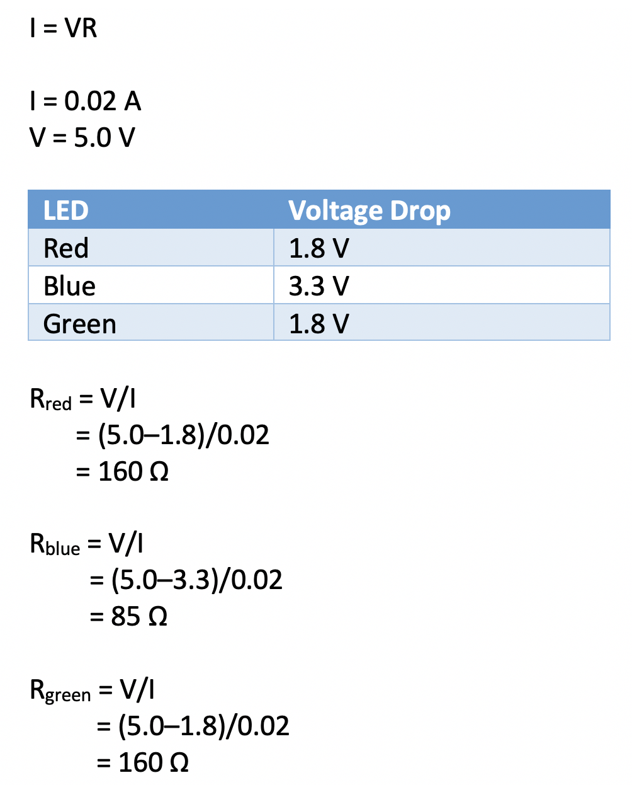

Bev-Temp
Concept
As an avid tea drinker, I often find myself burning my tongue from time to time when I sip my hot beverage too soon. The concept behind Bev-Temp is to provide a way for someone to quickly check if their brewed tea or coffee has cooled down enough to drink, with the help of a waterproof temperature probe and a RGB LED indicator.
Circuit

Schematic

Calculations
By Ohm's Law, I chose to use 220Ω resistors for each LED since the minimum resistance needed for each light was less than 220Ω.